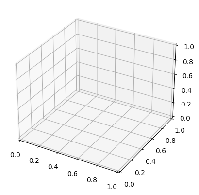
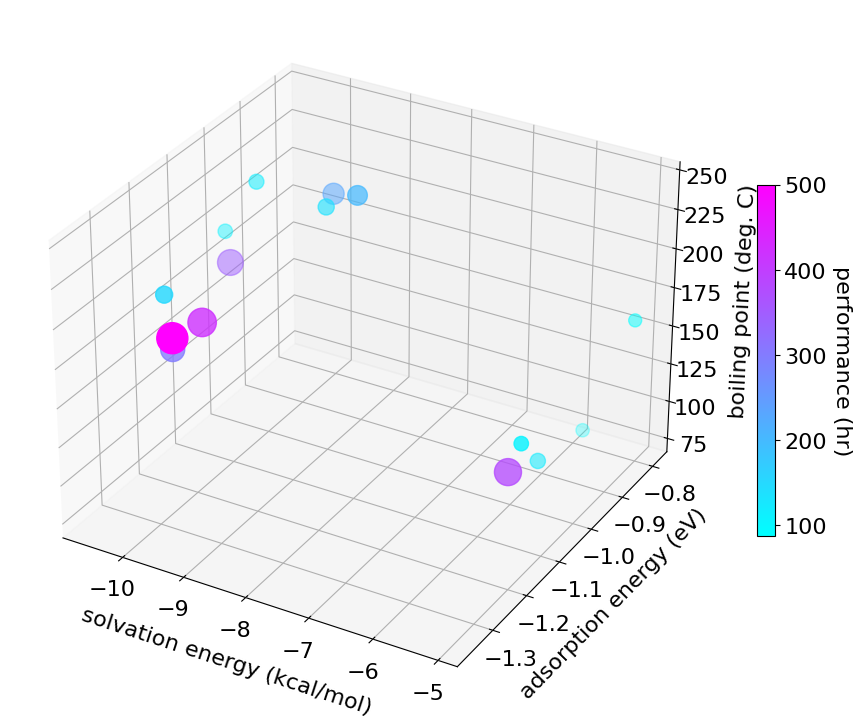
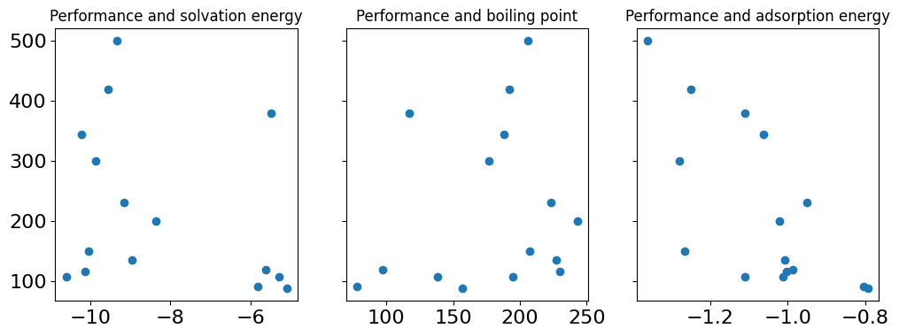
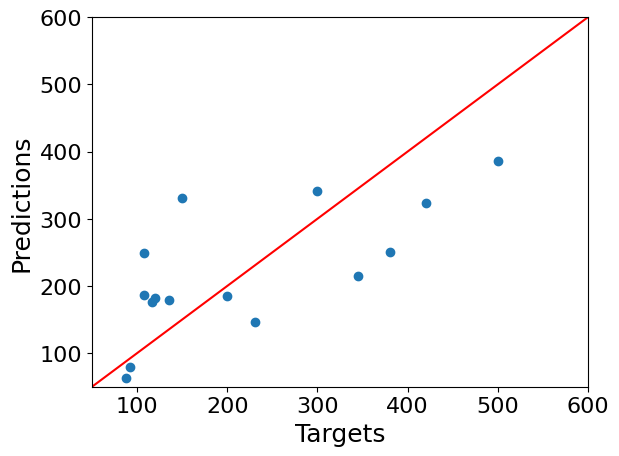
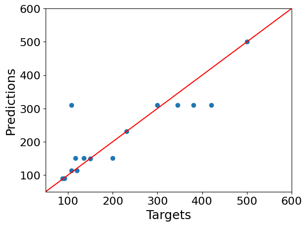

Compare linear regression and decision tree models to correlate battery performance with additive parameters#
Import libraries#
import numpy as np
import pandas as pd
import matplotlib.pyplot as plt
Read data file#
from google.colab import drive
drive.mount('/content/drive')
---------------------------------------------------------------------------
ModuleNotFoundError Traceback (most recent call last)
Cell In[2], line 1
----> 1 from google.colab import drive
2 drive.mount('/content/drive')
ModuleNotFoundError: No module named 'google'
path = '/content/drive/MyDrive/Colab Notebooks/CEIC6789_T2_2024/week8/additive_performance.xlsx'
data = pd.read_excel(path)
data.head()
| additive | solvation energy (kcal/mol) | boiling point (deg. C) | adsorption energy (eV) | Performance (hr) | |
|---|---|---|---|---|---|
| 0 | A1 | -10.594141 | 195 | -1.013321 | 108 |
| 1 | A2 | -10.212810 | 188 | -1.063100 | 345 |
| 2 | A3 | -9.548639 | 192 | -1.249188 | 420 |
| 3 | A4 | -9.331632 | 206 | -1.360756 | 500 |
| 4 | A5 | -9.162202 | 223 | -0.949734 | 231 |
Y = data['Performance (hr)']
X = data[['solvation energy (kcal/mol)', 'boiling point (deg. C)', 'adsorption energy (eV)']]
Visualize performance as a function of the three parameters#
3d plot#
from mpl_toolkits import mplot3d
fig = plt.figure()
ax = plt.axes(projection='3d')

fig = plt.figure(figsize = (9.5, 7.5))
plt.rcParams.update({'font.size': 16})
ax = plt.axes(projection='3d')
# Data for three-dimensional scattered points
xdata = data['solvation energy (kcal/mol)']
ydata = data['adsorption energy (eV)']
zdata = data['boiling point (deg. C)']
cdata = data['Performance (hr)']
sctt = ax.scatter3D(xdata, ydata, zdata, c=cdata, cmap='cool', s=cdata);
cbar = fig.colorbar(sctt, ax = ax, shrink = 0.5)
ax.set_xlabel('solvation energy (kcal/mol)',labelpad=10)
ax.set_ylabel('adsorption energy (eV)',labelpad=10)
ax.set_zlabel('boiling point (deg. C)',labelpad=10)
cbar.ax.set_ylabel('performance (hr)', rotation=270, labelpad=18)
plt.tight_layout()
plt.savefig('3d_plot.pdf', bbox_inches='tight')
plt.show()

Linear Regression model#
# Use scatter plots to check for linearity
f, ((ax1, ax2, ax3)) = plt.subplots(1, 3, sharey=True, figsize =(12,4))
ax1.scatter(data['solvation energy (kcal/mol)'], data['Performance (hr)'])
ax1.set_title('Performance and solvation energy', fontsize=12)
ax2.scatter(data['boiling point (deg. C)'], data['Performance (hr)'])
ax2.set_title('Performance and boiling point', fontsize=12)
ax3.scatter(data['adsorption energy (eV)'], data['Performance (hr)'])
ax3.set_title('Performance and adsorption energy', fontsize=12)
plt.show()

X = data[['solvation energy (kcal/mol)', 'boiling point (deg. C)', 'adsorption energy (eV)']]
# Let's check for multicollinearity
# VIF method
from statsmodels.stats.outliers_influence import variance_inflation_factor
variables = X
vif = pd.DataFrame()
vif["VIF"] = [variance_inflation_factor(variables.values, i) for i in range(variables.shape[1])]
vif["features"] = variables.columns
vif
| VIF | features | |
|---|---|---|
| 0 | 50.682134 | solvation energy (kcal/mol) |
| 1 | 33.963827 | boiling point (deg. C) |
| 2 | 22.076698 | adsorption energy (eV) |
X = data[['boiling point (deg. C)', 'adsorption energy (eV)']]
# Let's check for multicollinearity
# VIF method
from statsmodels.stats.outliers_influence import variance_inflation_factor
variables = X
vif = pd.DataFrame()
vif["VIF"] = [variance_inflation_factor(variables.values, i) for i in range(variables.shape[1])]
vif["features"] = variables.columns
vif
| VIF | features | |
|---|---|---|
| 0 | 14.693806 | boiling point (deg. C) |
| 1 | 14.693806 | adsorption energy (eV) |
Features and target#
X = data[['boiling point (deg. C)', 'adsorption energy (eV)']]
Y = data['Performance (hr)']
Feature scaling#
from sklearn.preprocessing import StandardScaler
scaler = StandardScaler()
scaler.fit(X)
StandardScaler()In a Jupyter environment, please rerun this cell to show the HTML representation or trust the notebook.
On GitHub, the HTML representation is unable to render, please try loading this page with nbviewer.org.
StandardScaler()
X_scaled = scaler.transform(X)
Build model#
from sklearn.linear_model import LinearRegression
reg = LinearRegression()
reg.fit(X_scaled, Y)
LinearRegression()In a Jupyter environment, please rerun this cell to show the HTML representation or trust the notebook.
On GitHub, the HTML representation is unable to render, please try loading this page with nbviewer.org.
LinearRegression()
Test predictions#
# Use the forest's predict method on the train data (WARNING: you need to use the test data ideally, but for demo purposes, we simply use the train data)
Y_hat = reg.predict(X_scaled)
plt.scatter(Y, Y_hat)
plt.xlabel('Targets',size=18)
plt.ylabel('Predictions',size=18)
plt.xlim(50,600)
plt.ylim(50,600)
xx = np.arange(50,600,0.1)
yy = xx
plt.plot(xx, yy, '-', color='red')
plt.show()

Error#
from sklearn.metrics import mean_squared_error as mse
print(mse(Y, Y_hat))
8930.293112108217
reg.coef_
array([ -5.81945147, -92.63365823])
Decision Tree model (A non-linear regression model)#
Build model#
# import the regressor
from sklearn.tree import DecisionTreeRegressor
# create a regressor object
dtree = DecisionTreeRegressor(max_depth=3, random_state = 0)
# fit the regressor with X and Y data
dtree.fit(X_scaled, Y)
DecisionTreeRegressor(max_depth=3, random_state=0)In a Jupyter environment, please rerun this cell to show the HTML representation or trust the notebook.
On GitHub, the HTML representation is unable to render, please try loading this page with nbviewer.org.
DecisionTreeRegressor(max_depth=3, random_state=0)
Test predictions#
# Use the forest's predict method on the train data (WARNING: you need to use the test data ideally, but for demo purposes, we simply use the train data)
Y_hat = dtree.predict(X_scaled)
plt.scatter(Y, Y_hat)
plt.xlabel('Targets',size=18)
plt.ylabel('Predictions',size=18)
plt.xlim(50,600)
plt.ylim(50,600)
xx = np.arange(50,600,0.1)
yy = xx
plt.plot(xx, yy, '-', color='red')
plt.show()

Error#
from sklearn.metrics import mean_squared_error as mse
print(mse(Y, Y_hat))
4205.857777777778
The decision tree regression model performs better compared to the linear regression model. The MSE for the former is lower than that of the latter.